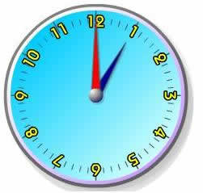
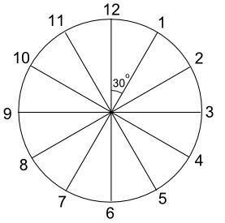
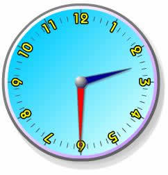
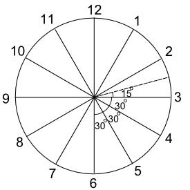
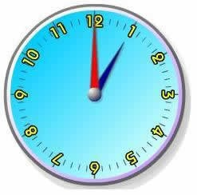
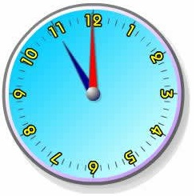
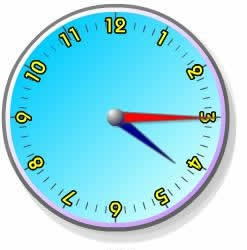
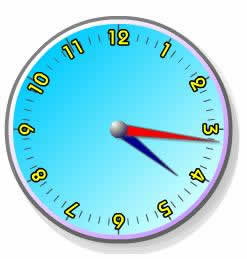
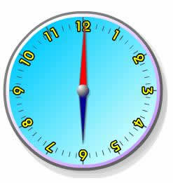
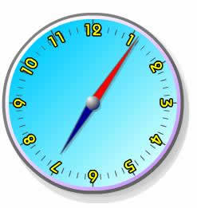

Activity: Clocks and Angles
This activity is about Analog clocks and the angles made by the hands of the clock. You can find out more about angles and how they're measured on the page Degrees (Angles).
What is the angle between the hands of a clock at 1 o'clock?

At 1 o'clock the minute hand (red) points to the 12 and the hour hand (blue) points to the 1. So we need to find the angle between the 12 and the 1.
How many of this angle are there in a complete turn?

There are 12 of them in a complete turn (360°), so each one must be 360° ÷ 12 = 30°
So the angle between the hands of a clock at 1 o'clock is 30° .
Note:
- It doesn't
matter whether we are talking about 1 am or 1
pm, the answer is exactly the same for both.
- The angle between the hands at 1 o'clock could also be given as the reflex angle 330°, but we will always give the smaller (acute or obtuse) angle.
What is the angle between the hands of a clock at 2:30?

So how many lots of 30° do we have this time?

- The angle between the 5 and the 6 is 30°
- The angle between the 4 and the 5 is 30°
- The angle between the 3 and the 4 is 30°
- The remaining angle is ½ × 30° = 15°
So the angle between the hands of a clock at 2:30 = 30° + 30° + 30° + 15° = 105°
Your Turn
Complete the following table (give the smaller angle in each case):
| Time | 1:00 | 2:30 | 7:00 | 10:30 | 11:20 | 3:40 | 5:15 | 8:45 |
| Angle | 30° | 105° |
Check your answers at the bottom of the page.
More Complicated Times
Finding the angle between the hands of a clock is easy as long as we don't use complicated times.
For example finding the angle between the hands at 9:37 is much more difficult. You can try that one if you wish, but it's probably too hard.
Example: At
what times is the angle between the hands of a clock equal to
30°?
Notice that the question asks for 'times'. There are many possible answers. Some of them are easy to find, others much more difficult.
Here are two easy answers:
|  |  |
| 1 o'clock | 11 o'clock |
| But what about this one? | |
|  | |
| 4:15 PM | |
At first glance, it looks like this might be a 30° angle also, but at 4:15, the hour hand has already moved a quarter of the way between the 4 and the 5.
So the angle is 30° + ¼ × 30° = 30° + 7½° = 37½° .
This might be a more accurate answer:

Can you find more 30° angles like this one?
At what times of the day do the hands of a clock lie in a straight line?
In other words the angle between them is 180°?
One obvious answer is 6 o'clock:

But what other answers could there be?
9:15 is not correct for a similar reason that 4:15 didn't give us exactly a 30° angle ... the hour hand has moved on beyond the 9.
This seems to be a very difficult question to answer, but there is an easy way.
How many times between 6:00 am and 6:00 pm do the hands make a
straight line?
There must be at least one point time for each hour:
- one between 7:00 am and 8:00 am,
- one between 8:00 am and 9:00 am,
- one between 9:00 am and 10:00 am,
- etc, up to ...
- one between 4:00 pm and 5:00 pm
That makes 11 equal parts, and so:
The next time after 6:00 am that the hands make a straight line is about 7:05½ am :

Your Turn!
| Hours | 7am - 8am | 8am - 9am | 9am - 10am | 10am - 11am | 11am - 12pm | 12pm - 1pm | 1pm - 2pm | 2pm - 3pm | 3pm - 4pm | 4pm - 5pm |
| Time | 7:05½ am |
You might like to check your answers on the page Analog and Digital Clocks Animation
Can you work out the times of the day when the hands of a clock make a right angle?
(Hint: there are 22 of them)
Answer to the earlier exercise:
| Time | 1:00 | 2:30 | 7:00 | 10:30 | 11:20 | 3:40 | 5:15 | 8:45 |
| Angle | 30° | 105° | 150° | 135° | 140° | 130° | 67½° | 7½° |